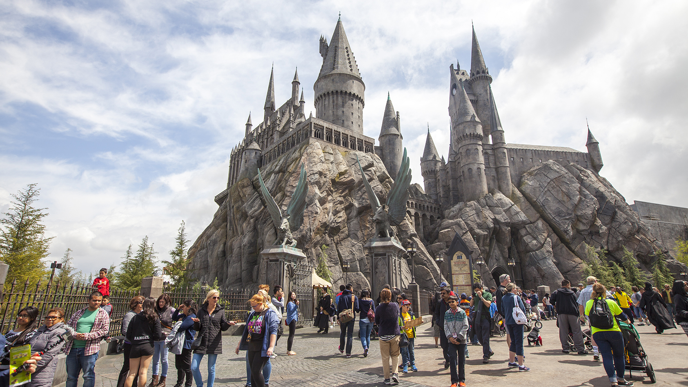

Disney vs Universal
Publicado el 30 de Mayo, 2025

Disney y Universal son dos gigantes del mundo de los parques temáticos, pero ofrecen experiencias muy distintas para los visitantes.
Disney es sinónimo de magia, cuentos clásicos y atención al detalle. Sus parques están llenos de personajes entrañables, ambientaciones inmersivas y atracciones para toda la familia. Desde los desfiles hasta los fuegos artificiales, todo está diseñado para emocionar.
Universal apuesta por la acción y la tecnologÃa. Con áreas como el Mundo Mágico de Harry Potter, Jurassic Park y Marvel, ofrece experiencias más intensas y modernas. Es el parque ideal para quienes buscan adrenalina y franquicias de cine actuales.
En cuanto a precios, ambos parques son similares, aunque Universal suele ofrecer menos variedad gastronómica y hotelera dentro del parque. Disney, por su parte, tiene opciones para todos los gustos y una infraestructura más amplia.
Universal puede recorrerse en menos tiempo que Disney, lo cual puede ser un punto a favor si tenés pocos dÃas de viaje. Sin embargo, Disney se destaca por la duración y variedad de sus espectáculos y festivales.
🢠Atracciones destacadas

Rise of the Resistance (Disney): Atracción épica de Star Wars con tecnologÃa inmersiva y narrativa envolvente.
Escape from Gringotts (Universal): Simulador 4D con efectos especiales en el mundo de Harry Potter.
Flight of Passage (Disney): Simulador 3D en Pandora con paisajes deslumbrantes y sensaciones realistas.
📹 Video recomendado: Comparativa Disney vs Universal
🎟️ Datos útiles
- 📠Ubicación: Orlando, Florida
- ğŸ Disney: 4 parques principales (Magic Kingdom, EPCOT, Animal Kingdom, Hollywood Studios)
- 🬠Universal: 2 parques principales (Universal Studios Florida y Islands of Adventure)
- 💡 Tip: Si tenés varios dÃas, vale la pena combinar ambos para tener una experiencia completa
↠Volver al inicio🰠Si buscás magia, historias clásicas y experiencias familiares, Disney es tu lugar. Si preferÃs acción, tecnologÃa y aventuras intensas, Universal te va a encantar. ¡Ambos ofrecen una experiencia inolvidable! 🌟